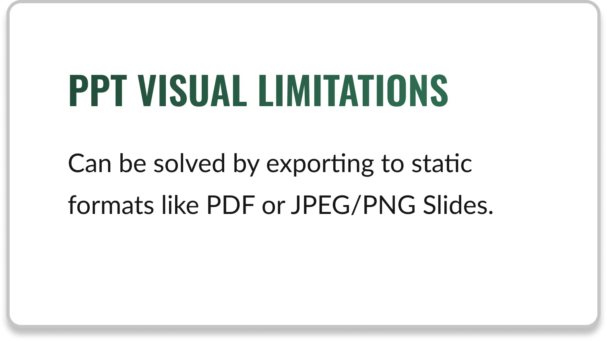

Pitch Deck Website for Film Fundraising

Summary: Case Study detailing the transformation of a film director’s vision into a cinematic, interactive website, presented to producers and stakeholders.
Summary: Case Study detailing the transformation of a film director’s vision into a cinematic, interactive website, presented to producers and stakeholders.
This was a client project at Fix It In Post Studios, a part of the services we offered for Film Pre-production. Here, We transformed a film director's static pitch deck into an interactive website with continuous music, cinematic visuals, and spy-inspired branding.
While the story and visual content were strong, the delivery format needed to be elevated. I reframed the solution entirely: not a deck, but a cinematic web experience.



I designed and developed a password-protected, fully responsive website for the film pitch, focused on cinematic pacing, minimal UI, and uninterrupted music playback.
Conducted research and created graphic and visual content, high fidelity mockups thematically inspired by movies in the same genre (Cold War Era, WW2, Neo-Noir, Spy).

Visitors began with a login screen leading to a blank dark interface, all to keep the mystery intact. Below is the investor's user journey flow to access the website's content.


The first thing users see is the hero section and nothing but it. Akin to invisible ink, only on clicking the stylized button does the background music get triggered and transition to reveal the pitch content.
Wireframe

Implementation
The final step was to develop, test for bugs and usability, and ship the website. It was built with custom JavaScript to ensure performance across all web devices.
Due to an NDA and the film currently being in production, I am only able to share a low fidelity prototype with all identifying information scrapped through the figma link below:


Designing outside of traditional apps or e-commerce expands how UX can solve problems in storytelling, pitching, and entertainment.
Autoplay restrictions and cross-device behavior taught me that innovation isn’t just about vision; it’s about solving within constraints.